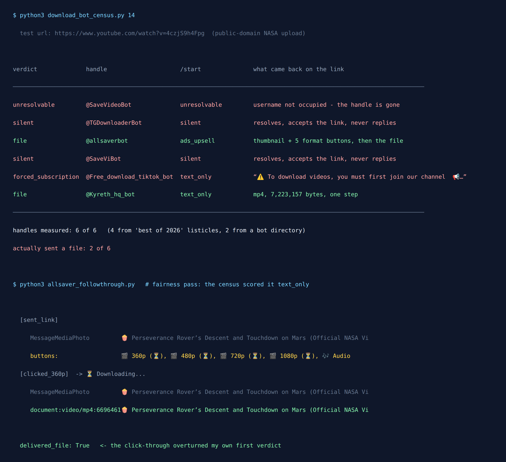

6 Telegram Download Bots Tested: Only 2 Sent a File
Every list of Telegram download bots I can find ends with the same sentence, in slightly different words: “Telegram bans and renames bots constantly, so confirm a bot still responds before you rely on it.”
It is good advice. It is also a confession. The list is telling you it has not checked, and quietly handing you the job.
So on 7 September 2026 I did the checking. Six handles, taken from two independent live lists on the day. One public-domain link sent to each. I read the message objects Telegram returned rather than the screenshots or the bios. Whether a file arrived is a property of the reply, not a matter of opinion.
Two of the six sent a file. The handle that leads almost every list does not exist at all.

The set, and why it is not a cherry-pick
Picking six bots that fail is easy and worthless. So the set was fixed before anything was measured, and it came from other people's recommendations, not mine:
- Four handles —
@SaveVideoBot,@TGDownloaderBot,@allsaverbot,@SaveViBot, named by the “best Telegram video downloader / download bot for 2026” listicles that currently rank for the query. - Two handles —
@Free_download_tiktok_bot,@Kyreth_hq_bot, named in the download category of a general Telegram bot directory.
That split turned out to matter more than I expected, so hold on to it.
The test link was a NASA upload: Perseverance Rover’s Descent and Touchdown on Mars (Official NASA Video). NASA material is generally not copyrighted, per NASA’s own images and media guidelines, which makes it the one video I can hand to six strangers' servers while testing whether the machinery works and nothing else.
Result 1: the most-recommended bot is not there
@SaveVideoBot is the name at the top of the lists, the one described as handling “most formats and sizes up to 2 GB”. Resolving it returns:
No user has "savevideobot" as usernameNot banned, not broken, not rate-limited. The username is unoccupied. Whatever that bot was, it is gone, and the lists recommending it in 2026 are copying each other rather than opening Telegram.
There is a second-order effect here worth naming. @SaveViBot, a different handle one character short of the famous one, presents itself as “Save Video Bot”. When the well-known name empties out, the traffic still arrives, and something will be waiting at the near-miss spelling to collect it.
Result 2: the failure mode nobody warns you about is silence
@TGDownloaderBot and @SaveViBot both resolve. Both have plausible display names: TG Downloader and Save Video Bot. Both accept /start. Both accept the link. Neither ever replies to anything.
This is worse than a dead handle, because a dead handle tells you immediately. A silent bot looks completely normal: it has a profile, the message ticks show as delivered, and you sit there assuming it is working on your video. A bot username survives the server behind it being switched off, so “the account exists” carries no information about whether any program is listening.
Practical consequence: if nothing comes back within about fifteen seconds, nothing is coming back. The working bots in this test answered in well under that, and re-sending does not help.
Result 3: one bot sells the file back to you as an audience
@Free_download_tiktok_bot opens confidently. Its /start message promises “No watermark”, “Fast download”, “Smart cache system” and, in its own words, “Totally free 🎁”.
Send it a link and the tone changes:
“⚠️ To download videos, you must first join our channel. 📢 Join @Dirgrama_Directorio and enjoy exclusive content. After joining, send your link again.”
A button labelled 🔗 Join channel comes attached. This is the forced-subscription pattern: the download is not the product, you are. Each person who wants a video is converted into a subscriber for a promotional channel, and the file is the bait. “Totally free” is technically true and completely misleading, which is a fairly precise description of the whole category.
Result 4: two of them genuinely work
@Kyreth_hq_bot asked for a language, took the link, said ⬇️ Downloading YouTube... and returned a 7,223,157-byte mp4. One step, no wall, no upsell. It came from the bot directory, not from any “best of 2026” list.
@allsaverbot works too, in two steps: it returns the video’s title with a thumbnail and a row of quality buttons (360p, 480p, 720p, 1080p, Audio) and sends the file once you choose. It is ad-supported, and says so plainly (“Turn off the ads /subscription”), which is a more honest business model than the channel wall even though it is the less pleasant experience.
| Handle | Verdict | What actually happened |
|---|---|---|
@SaveVideoBot | Gone | Username not occupied. The most-recommended handle on the lists. |
@TGDownloaderBot | Silent | Resolves as “TG Downloader”, accepts everything, never answers. |
@SaveViBot | Silent | Resolves as “Save Video Bot”. Same near-miss name, same silence. |
@Free_download_tiktok_bot | Channel wall | Says “Totally free”, then demands you join @Dirgrama_Directorio. |
@allsaverbot | Works, ad-supported | Thumbnail + quality buttons, then a 6,696,461-byte mp4 on 360p. |
@Kyreth_hq_bot | Works | One step, 7,223,157-byte mp4, no wall and no upsell. |
Now the split from earlier. Of the four handles the curated “best of 2026” lists named, exactly one delivered a file. Of the two the plain directory named, one delivered and one walled. The editorial lists performed worse than an unedited category page. That makes sense once you accept that the lists were never testing anything, only recopying each other while the underlying bots quietly rotted.
Two things I got wrong, and how the run caught them
I would rather publish the corrections than pretend the first pass was clean, because both mistakes are the kind that turn into a confident wrong article.
The first test link was a live stream
My original test URL resolved to “NASA Live: Official Stream of NASA TV”. A live stream is the hardest possible input, because there is no finite file to fetch, so every failure would have been ambiguous, and I would have reported bots as broken when they were merely being asked something unreasonable. I noticed when @allsaverbot came back with “The download failed. Try again later”. Re-ran the entire census against a finite upload instead. The verdicts came back identical for five of six — and the sixth is the next mistake.
My own classifier mislabelled a bot, twice over
The census first scored @allsaverbot as a forced subscription wall. It is not one. My rule fired on the bare substring “subscription”, which appears in its ad-removal upsell: “Turn off the ads /subscription”. That is a paid option, not a gate. I split the rule in two: a wall now requires an explicit demand (“must first join”, “not subscribed”) or a join hint carrying an actual channel button, and the upsell gets its own label. @Free_download_tiktok_bot stays a wall on that stricter test; @allsaverbot does not.
Then the same bot got scored as not delivering a file, because its first reply carries a thumbnail and buttons rather than a video. That is a two-step flow, and scoring it as failure is the measurement's fault, not the bot's. So I ran a separate pass that clicks the 360p button and records what arrives. A 6,696,461-byte mp4 arrives. The follow-through overturned my own verdict, and moved the headline from “1 of 6” to “2 of 6”.
The general lesson is the one I keep relearning: a script's exit code is a hypothesis. If a result would make a good headline, that is exactly when it needs a control run.
Why the working bots offer you 360p
Those quality buttons are not a courtesy, they are a workaround for a hard ceiling. Through the standard Bot API a bot can send you a file of at most 50 MB, and can fetch one of at most 20 MB from Telegram. Both limits are stated in the official Bot API documentation, and I measured both to the byte in a separate test of the file size limits.
So for anything longer than a few minutes, 1080p simply cannot reach you through an ordinary bot. When a bot offers 360p first and greys out the higher options, it is telling you the truth about its own ceiling. A bot promising 2 GB downloads is either using infrastructure well beyond the standard API, or repeating a number from a listicle.
If you just want the thing to work
- Check the handle exists before trusting any list. Open it in Telegram. If the profile does not load, the list is stale — and it is stale about everything else too.
- Give it fifteen seconds. A working download bot answers fast. Silence is not processing, it is a switched-off server.
- Walk away from channel walls. “Join our channel to download” means the file was never the product.
- Expect 360p on anything long, and treat a promise of large high-definition files as a tell.
- For Telegram’s own videos, you often need no bot. If the sender has not restricted saving, the built-in download in the message menu is the whole solution, and it does not involve handing your link to a stranger.
Tired of Telegram things that go silent?
The Telegram Party Pack is 255 group-chat game prompts that run on nothing but the chat you already have. No bot to add, no handle to check, nothing that can quietly stop existing next spring.
Get the pack — $9.99 Or start with the free party games list.The pattern underneath all of this
I have now run this same exercise three times in this cluster: on anonymous message bots, on quiz bots, and now on download bots. The result has the same shape every time: a set of confidently recommended handles, a minority that actually do the advertised thing, and at least one entry that no longer exists in any form.
The reason is structural. A Telegram bot costs nothing to name and something real to keep running. Lists are written once and re-published forever. So the gap between what is recommended and what works widens quietly, month after month, and nobody who profits from the list has any reason to go and measure it.
Fifteen minutes of sending /start to things is worth more than any list, including this one. This article has a date on it for the same reason the others do. By next spring some of these verdicts will be wrong too, and the honest move is to say so rather than to keep collecting the traffic.